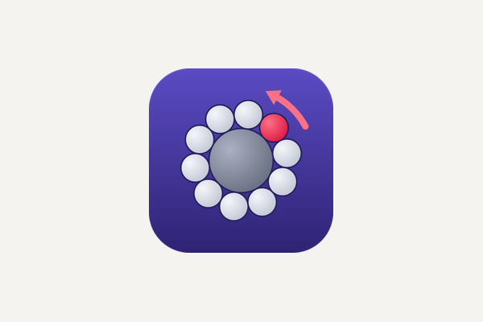

Software built around academic research from the 1990s — highly specialised, and kept here for anyone it may still help.
The applications on this page are not general-purpose tools. Each one is tied to academic research material from the 1990s, and exists to bring part of that work back into a usable, working form. They are extremely specific in nature: they assume familiarity with the original research, they address narrow questions within it, and outside that context most of them will make little sense.
They are kept here mainly for the principal researcher’s own use. Anyone with an interest in the same area is nevertheless welcome to explore them. More about the research background is on Francois Charette’s biography.

Master’s thesis, Mechanical Engineering, Université Laval, 1992 · Desktop application for Windows
The Fortran programs behind the 1992 master’s thesis on the damping of stranded cables, and behind the 1990 report that came before it, revived as one desktop application. It computes the bending stiffness of a strand whose wires stick to or slip on its core, and the energy a wire dissipates by slipping, for a sinusoidal deflection or a constant radius of curvature — and reproduces the original programs’ results digit for digit.
— downloads
Read the Thesis Thèse originale (français) Download Source on GitHubAn overhead power-line conductor is a strand: wires wound helically around a core. When the line vibrates, the conductor bends back and forth, its wires slip against the core, and the friction between them turns part of the motion into heat. How much energy that internal friction can absorb is part of how a conductor behaves under vibration.
The thesis, Analysis of the Damping Characteristics of a Stranded Cable under Vibration, was carried out at Université Laval for Hydro-Québec’s research institute, IREQ, and completed in April 1992. It developed a simplified single-layer strand model to compute the energy dissipated by friction between the wires and the core, with the relative displacement between wire and core determined from contact mechanics, and compared the predictions with tests on overhead transmission-line conductors in free-field conditions. Three models of the slip are worked through: Hardy’s model, continuity of deformation, and compliance, which separates micro-slip from macro-slip. The thesis followed a 1990 report on the bending stiffness of a strand, Rigidité transversale d’un toron (report SM-90-03).
That work rested on Fortran programs written for DOS: seven from the 1990 report and six from the thesis. The 1990 sources and executables survived intact; the 1992 sources survived only as listings printed in the program manual, and were recovered from its WordPerfect file. Strand Slip brings all thirteen back as one application, with tabs that follow the thesis chapter by chapter, a plot and a result table for every run, and an export that writes the same files the original programs wrote, record for record.
The user manual explains each tab, and the original Fortran sources are kept unchanged in the repository.
Strand Slip runs on Windows only: take the per-user installer, which needs no administrator rights, or the portable zip, from the GitHub release page.